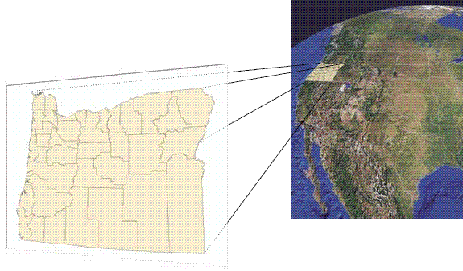

Supporting Creative Uses of Our Collections
 Credit: Joan Brunetta and Eve Loftus.
Credit: Joan Brunetta and Eve Loftus.
 Mapping Inequality, University of Richmond
Mapping Inequality, University of Richmond
How does it work?


Current set up
Why not GeoTIFF?
- Time consuming for researchers and library staff
- Hard to use, outdated format
- Completely different app - bad for discovery
- Incompatible with tools our students are using
Credit: John Nelson’s Mapping Mount Everest
Credit: Andria Olson’s Mapping the First Transcontinental Railroad
IIIF Georeference Extension specification
Picture of the IIIF conference hosted at Harvard in 2022 from the British Library Digital Scholarship blog .
 From our guide on georeferencing Harvard map collections using IIIF
.
From our guide on georeferencing Harvard map collections using IIIF
.

Questions?
- Harvard Map Collection - maps@harvard.edu
- Belle’s email - belle_lipton@harvard.edu